import rastereasy
Reduction of Dimension
1) Read the image
name_im='./data/demo/sentinel.tif'
names = {"NIR":8,"G":3,"CO" : 1,"SWIR2":11,"B": 2,"R":4,"RE1":5,"RE2":6,"RE3":7,"WA":9,"SWIR1":10,"SWIR3":12}
image=rastereasy.Geoimage(name_im,names=names)
image.info()
- Size of the image:
- Rows (height): 1000
- Cols (width): 1000
- Bands: 12
- Spatial resolution: 10.0 meters / degree (depending on projection system)
- Central point latitude - longitude coordinates: (7.04099599, 38.39058840)
- Driver: GTiff
- Data type: int16
- Projection system: EPSG:32637
- Nodata: -32768.0
- Given names for spectral bands:
{'CO': 1, 'B': 2, 'G': 3, 'R': 4, 'RE1': 5, 'RE2': 6, 'RE3': 7, 'NIR': 8, 'WA': 9, 'SWIR1': 10, 'SWIR2': 11, 'SWIR3': 12}
2) PCA
help(image.pca)
Help on method pca in module rastereasy.rastereasy:
pca(n_components=4, bands=None, random_state=None, dest_name=None, standardization=True, nb_points=1000) method of rastereasy.rastereasy.Geoimage instance
Perform PCA on the image data.
This method computes a Principal Component Analysis (PCA) on selected image bands.
Parameters
----------
n_components : int, optional
Number of components to keep (if None, all components are kept).
Default is 4.
bands : list of str or None, optional
List of bands to use. If None, all bands are used.
Default is None.
random_state : int or None, optional
Random seed for reproducible results. If None, results may vary between runs.
Default is RANDOM_STATE (defined globally).
dest_name : str, optional
Path to save the decomposition. If None, the image is not saved.
Default is None.
standardization : bool, optional
Whether to standardize bands before PCA (recommended).
Default is True.
nb_points : int or None, optional
Number of random points to sample for PCA computation. If None,
all valid pixels are used (may be slow for large images).
Default is 1000.
Returns
-------
Geoimage
A new Geoimage containing the PCA bands.
tuple
A tuple (pca_model, scaler) to reuse the transformation on other images.
Examples
--------
>>> # Basic PCA with 5 components
>>> pca, (pca_model, scaler) = image.pca(n_components=5)
>>> pca.visu(colorbar=True, cmap='viridis')
>>> # PCA only on specific bands and save result
>>> pca, (pca_model, scaler) = image.pca(
... n_components=3, bands=["NIR", "Red", "Green"],
... dest_name="pca.tif")
>>> # Apply the same model to another image
>>> other_pca = other_image.transform((pca_model, scaler))
Notes
-----
- Standardization is recommended, especially when bands have different ranges.
- The returned (pca_model, scaler) can be reused to project other images into the same PCA space.
2.1) PCA on the entire image
pca, pca_model = image.pca(n_components=3, nb_points=None)
pca.colorcomp()
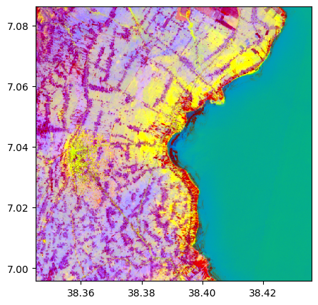
pca.info()
- Size of the image:
- Rows (height): 1000
- Cols (width): 1000
- Bands: 3
- Spatial resolution: 10.0 meters / degree (depending on projection system)
- Central point latitude - longitude coordinates: (7.04099599, 38.39058840)
- Driver: GTiff
- Data type: float64
- Projection system: EPSG:32637
- Nodata: -32768.0
- Given names for spectral bands:
{'PCA_1': 1, 'PCA_2': 2, 'PCA_3': 3}
2.2) Applying the model to another image
image2=rastereasy.Geoimage('/Users/corpetti/Enseignement/2025-2026/TP_moustiques/im.tif', history=True)
help(image2.transform)
Help on method transform in module rastereasy.rastereasy:
transform(model, bands=None) method of rastereasy.rastereasy.Geoimage instance
Apply a projection model (PCA, tSNE, ...) to the image.
This method applies a projection model (such as one created by pca())
to the image data, creating a new image.
Parameters
----------
model : scikit model or tuple
If tuple, it must containi (data_model, scaler) where:
- data_model: A trained scikit-learn model with a transform() method
- scaler: The scaler used for standardization (or None if not used)
bands : list of str or None, optional
List of bands to use as input for the model. If None, all bands are used.
Default is None.
Returns
-------
Geoimage
A new Geoimage containing the model output
Examples
--------
>>> # Train a model on one image and apply to another
>>> pca, model = reference_image.pca(n_components=5)
>>> new_projection = target_image.transform(model)
>>> new_projection.visu(colorbar=True, cmap='viridis')
>>>
>>> # Train on specific bands and apply to the same bands
>>> _, model = image.pca(bands=["NIR", "Red"], n_components=3)
>>> result = image.transform(model, bands=["NIR", "Red"])
>>> result.save("pca.tif")
>>>
>>> # Apply a RF model trained of other data to a Geoimage
>>> from sklearn.decomposition import PCA
>>> clf = PCA(n_components=2, random_state=0)
>>> clf.fit(X, y)
>>> result = image.transform(clf)
Notes
-----
- The model must have been trained on data with the same structure as what it's being applied to (e.g., same number of bands)
- If a scaler was used during training, it will be applied before prediction
image2.colorcomp()
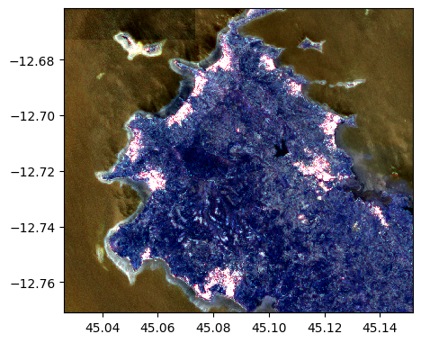
im_test_pca = image2.transform(pca_model)
im_test_pca.colorcomp()
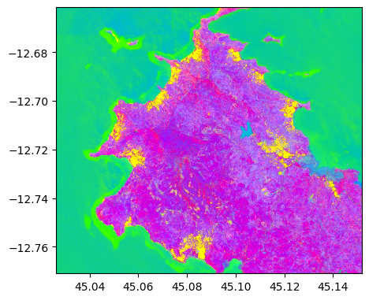
im_test_pca.info()
- Size of the image:
- Rows (height): 1211
- Cols (width): 1362
- Bands: 3
- Spatial resolution: 10.0 meters / degree (depending on projection system)
- Central point latitude - longitude coordinates: (-12.71625261, 45.08894774)
- Driver: GTiff
- Data type: float64
- Projection system: EPSG:32738
- Nodata: -32768.0
- Given names for spectral bands:
{'1': 1, '2': 2, '3': 3}
--- History of modifications---
[2025-10-17 18:20:47] - Created image from data array
[2025-10-17 18:20:47] - Created using transformation model: PCA
2.3) PCA on a reduced number of points
pca, pca_model = image.pca(n_components=3, nb_points=2000)
pca.colorcomp()
# Without standardization
pca, pca_model = image.pca(n_components=3, nb_points=2000, standardization=False)
pca.colorcomp()
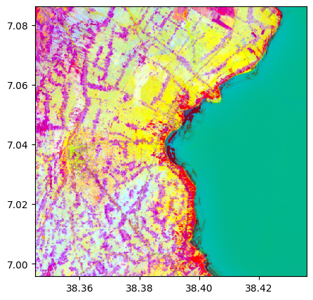
2.4) PCA on a reduced number of points and on selected bands
# Only on some bands
pca, pca_model = image.pca(n_components=3, nb_points=2000, standardization=False, bands=['R','G','B','NIR'])
pca_model[0].explained_variance_
array([1825541.84421836, 119753.9847745 , 5060.20385938])
pca.colorcomp()
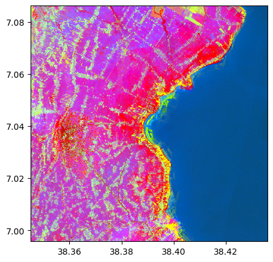
3) LLE
help(image.lle)
Help on method lle in module rastereasy.rastereasy:
lle(n_components=2, n_neighbors=8, bands=None, nb_points=5000, standardization=True, dest_name=None, random_state=None, **kwargs) method of rastereasy.rastereasy.Geoimage instance
Perform Locally Linear Embedding (LLE) on the image data.
This method computes a Locally Linear Embedding reduction to unfold the
manifold on which the pixel values lie. It's particularly useful for
data with an intrinsic low-dimensional structure that is non-linear.
Parameters
----------
n_components : int, optional
The number of coordinates for the manifold (target dimension).
Default is 2.
n_neighbors : int, optional
Number of neighbors to consider for each point. This is a crucial
parameter for LLE that significantly impacts the result.
Default is 8.
bands : list of str or None, optional
List of bands to use for the computation. If None, all bands are used.
Default is None.
nb_points : int or None, optional
Number of random pixels to sample for the LLE computation. Since LLE
is computationally intensive, using a sample is highly recommended for
large images. If None, all valid pixels are used.
Default is 5000.
standardization : bool, optional
Whether to standardize bands before applying LLE (highly recommended).
Default is True.
dest_name : str or None, optional
Path to save the resulting LLE image. If None, the image is not saved.
Default is None.
random_state : int or None, optional
Random seed for pixel sampling and for the ARPACK solver, ensuring
reproducible results.
Default is RANDOM_STATE.
**kwargs : dict, optional
Additional keyword arguments to pass to the scikit-learn
`LocallyLinearEmbedding` function, such as `method` ('standard',
'modified', 'hessian', 'ltsa'), `reg`, or `eigen_solver`.
Returns
-------
Geoimage
A new Geoimage instance containing the LLE components as bands.
tuple
A tuple (lle_model, scaler) containing the fitted LLE model and the
scaler, which can be used to transform other images.
Examples
--------
>>> # Basic LLE with 2 components
>>> lle_img, (lle_model, scaler) = image.lle(n_components=2)
>>> lle_img.visu(cmap='viridis')
>>> # LLE with more neighbors on specific bands and save the result
>>> lle_img, _ = image.lle(
... n_components=3,
... n_neighbors=20,
... bands=["NIR", "Red", "Green"],
... dest_name="lle_result.tif"
... )
>>> # Apply the same LLE model to another image
>>> other_image_lle = other_image.transform((lle_model, scaler))
Notes
-----
- LLE is computationally more expensive than PCA. Using a subset of pixels
via `nb_points` is strongly advised for large rasters.
- The choice of `n_neighbors` is critical. A value too small may fail to
capture the underlying manifold, while a value too large may over-smooth it.
- The returned (lle_model, scaler) tuple can be used to project other images
into the same embedding space, assuming they lie on the same manifold.
3.1) LLE on the entire image
# Read only a subset of the image since TSNE can be long
image=rastereasy.Geoimage(name_im,names=names, area=((300,400),(300,350)), history=True)
image.colorcomp()
lle, lle_model = image.lle(n_components=3, n_neighbors= 12, nb_points=None)
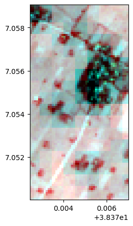
lle.colorcomp()
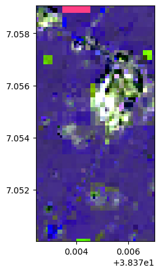
lle.info()
- Size of the image:
- Rows (height): 100
- Cols (width): 50
- Bands: 3
- Spatial resolution: 10.0 meters / degree (depending on projection system)
- Central point latitude - longitude coordinates: (7.05454580, 38.37472999)
- Driver: GTiff
- Data type: float64
- Projection system: EPSG:32637
- Nodata: -32768.0
- Given names for spectral bands:
{'LLE_1': 1, 'LLE_2': 2, 'LLE_3': 3}
--- History of modifications---
[2025-10-17 18:21:46] - Created image from data array
[2025-10-17 18:21:46] - Created using transformation model: LocallyLinearEmbedding
[2025-10-17 18:21:46] - Changed band names
[2025-10-17 18:21:46] - Created using LLE with 3 components
3.2) Applying the model to another image
image2=rastereasy.Geoimage('/Users/corpetti/Enseignement/2025-2026/TP_moustiques/im.tif', history=True)
help(image2.transform)
Help on method transform in module rastereasy.rastereasy:
transform(model, bands=None) method of rastereasy.rastereasy.Geoimage instance
Apply a projection model (PCA, tSNE, ...) to the image.
This method applies a projection model (such as one created by pca())
to the image data, creating a new image.
Parameters
----------
model : scikit model or tuple
If tuple, it must containi (data_model, scaler) where:
- data_model: A trained scikit-learn model with a transform() method
- scaler: The scaler used for standardization (or None if not used)
bands : list of str or None, optional
List of bands to use as input for the model. If None, all bands are used.
Default is None.
Returns
-------
Geoimage
A new Geoimage containing the model output
Examples
--------
>>> # Train a model on one image and apply to another
>>> pca, model = reference_image.pca(n_components=5)
>>> new_projection = target_image.transform(model)
>>> new_projection.visu(colorbar=True, cmap='viridis')
>>>
>>> # Train on specific bands and apply to the same bands
>>> _, model = image.pca(bands=["NIR", "Red"], n_components=3)
>>> result = image.transform(model, bands=["NIR", "Red"])
>>> result.save("pca.tif")
>>>
>>> # Apply a RF model trained of other data to a Geoimage
>>> from sklearn.decomposition import PCA
>>> clf = PCA(n_components=2, random_state=0)
>>> clf.fit(X, y)
>>> result = image.transform(clf)
Notes
-----
- The model must have been trained on data with the same structure as what it's being applied to (e.g., same number of bands)
- If a scaler was used during training, it will be applied before prediction
image2.colorcomp()
im_test_lle = image2.transform(lle_model)
im_test_lle.colorcomp()
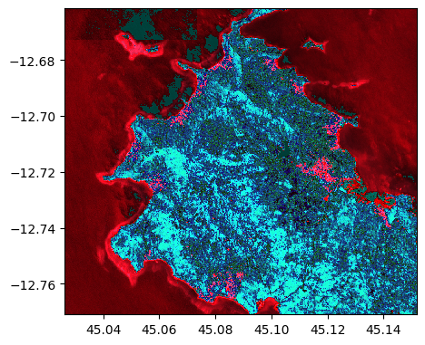
im_test_lle.info()
- Size of the image:
- Rows (height): 1211
- Cols (width): 1362
- Bands: 3
- Spatial resolution: 10.0 meters / degree (depending on projection system)
- Central point latitude - longitude coordinates: (-12.71625261, 45.08894774)
- Driver: GTiff
- Data type: float64
- Projection system: EPSG:32738
- Nodata: -32768.0
- Given names for spectral bands:
{'1': 1, '2': 2, '3': 3}
--- History of modifications---
[2025-10-17 14:00:27] - Created image from data array
[2025-10-17 14:00:27] - Created using transformation model: LocallyLinearEmbedding
3.3) LLE on some points
lle, lle_model = image.lle(n_components=3, nb_points=8000)
lle.colorcomp()
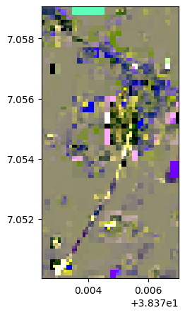
# Without standardization
lle, lle_model = image.lle(n_components=3, nb_points=2000, standardization=False)
lle.colorcomp()
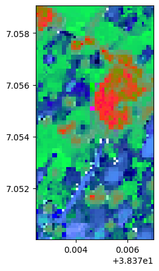
3.4) LLE on some points and on some selected bands
# Only on some bands
lle, lle_model = image.lle(n_components=3, nb_points=2000, standardization=False, bands=['R','G','B','NIR'])
lle.colorcomp()
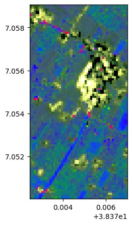
4) TSNE
help(image.tsne)
Help on method tsne in module rastereasy.rastereasy:
tsne(n_components=4, perplexity=5, bands=None, random_state=None, dest_name=None, standardization=True) method of rastereasy.rastereasy.Geoimage instance
Perform TSNE on the image data.
This method computes a t-distributed Stochastic Neighbor Embeddings (tSNE) on selected image bands.
Parameters
----------
n_components : int, optional
Number of components to keep (if None, all components are kept).
Default is 4.
perplexity : int, optional
Perplexity in TSNE. It is related to the number of nearest neighbors
that is used in other manifold learning algorithms.
Default is 4.
bands : list of str or None, optional
List of bands to use. If None, all bands are used.
Default is None.
random_state : int or None, optional
Random seed for reproducible results. If None, results may vary between runs.
Default is RANDOM_STATE (defined globally).
dest_name : str, optional
Path to save the decomposition. If None, the image is not saved.
Default is None.
standardization : bool, optional
Whether to standardize bands before PCA (recommended).
Default is True.
Returns
-------
Geoimage
A new Geoimage containing the TSNE bands.
tuple
A tuple (tsne_model, scaler) to reuse the transformation on other images.
Examples
--------
>>> # Basic TSNE with 5 components
>>> tsne = image.tsne(n_components=5, perplexity = 5)
>>> tsne.visu(colorbar=True, cmap='viridis')
>>> # TSNE only on specific bands and save result
>>> tsne = image.tsne(
... n_components=3, , perplexity = 3, bands=["NIR", "Red", "Green"],
... dest_name="tsne.tif")
Notes
-----
- Standardization is recommended, especially when bands have different ranges.
- The returned (tsne_model, scaler) can be reused to project other images into the same PCA space.
- Unlike PCA, here we apply TSNE to the entire image. The model can not be applied to other ones
# Read only a subset of the image since TSNE can be long
image=rastereasy.Geoimage(name_im,names=names, area=((300,400),(300,350)), history=True)
image.colorcomp()
tsnei = image.tsne(n_components=3, perplexity=10, bands=['R','G','RE2','SWIR1','NIR'])
tsnei.info()
- Size of the image:
- Rows (height): 100
- Cols (width): 50
- Bands: 3
- Spatial resolution: 10.0 meters / degree (depending on projection system)
- Central point latitude - longitude coordinates: (7.05454580, 38.37472999)
- Driver: GTiff
- Data type: float32
- Projection system: EPSG:32637
- Nodata: -32768.0
- Given names for spectral bands:
{'TSNE_1': 1, 'TSNE_2': 2, 'TSNE_3': 3}
--- History of modifications---
[2025-10-17 14:00:43] - Created image from data array
[2025-10-17 14:00:43] - Changed band names
[2025-10-17 14:00:43] - Created using TSNE with 3 components
Using bands: ['R', 'G', 'RE2', 'SWIR1', 'NIR']
tsnei.colorcomp()
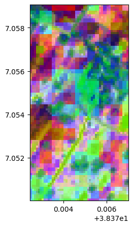